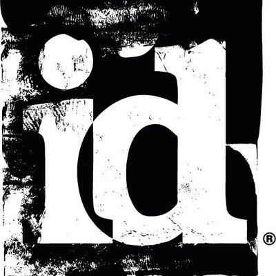

Gordon tinédzser korában jazz/blues gitárosként kezdte zenei karrierjét. [1] Először hangtervezőként kezdett dolgozni a Pandemic Studios -nál , ahol további hangtervezésben is közreműködött a Destroy All Humans! 2 . 2013-ban megszerezte a Killer Instinct című verekedős videojáték első évadát , amely az eredeti, 1994-es cím újraindítása . A következő évben Gordon megszerezte a Killer Instinct második évadát és a Wolfenstein: The New Order első személyű lövöldözős akció-kalandfilmet (a MachineGames által fejlesztett ). 2015- ben visszatért a Wolfenstein -sorozathoz, hogy megkomponálja a zenétWolfenstein: The Old Blood , a Wolfenstein: The New Order előzménye
2016-ban Gordon elkészítette a sci-fi első személyű lövöldözős játék, a Doom pontszámát, a Doom 64 folytatását és a franchise soft rebootját, amelyet az id Software fejlesztett ki . A Doomhoz írt partitúrája számos díjat nyert, beleértve a DICE-díjat az eredeti zeneszerzésben elért kiemelkedő teljesítményért, [2] az SXSW Gaming díjat a kiváló zenei pontszámért, [3] a Game Awards legjobb zenei/hangtervezési díját, és jelölték BAFTA -díjra. Játékok díja a legjobb zenének
2017-ben Gordon elkészítette az Arkane Studios által fejlesztett Prey című horror első személyű lövöldözős film kottáját . Martin Stig Andersen mellett is dolgozott, hogy ismét visszatérjen a Wolfenstein -sorozathoz, és megszerezte a Wolfenstein II: The New Colossus -t, amelyet a MachineGames fejlesztett .
2020-ban Gordon befejezte a Doom Eternal partitúráját ; noha a játék zenéjét ismét jól fogadták, a filmzene kiadása körüli körülmények nyilvános összetűzéshez vezettek Gordon és az id Software között, és elváltak útjaik. [5] 2022 novemberében Gordon a Mediumról szóló hosszas nyilatkozatában foglalkozott ezzel a vitával
2020. június 23-án a brit Bring Me the Horizon rockegyüttes bejelentette, hogy Gordonnal együtt fognak dolgozni a közelgő megjelenésükön. [8] Oliver Sykes énekes arról beszél, hogyan szeretett bele a Doom Eternal filmzenébe a karantén alatt. Mivel erősen inspirálta Gordon munkája, a zenekar úgy döntött, felkeresi őt, és felajánl egy együttműködést. Az így elkészült mű " Parasite Eve " címmel június 25-én jelent meg egy hozzá tartozó videoklippel együtt. [9] Az együttműködés ezután kibővült a Post Human: Survival Horror kereskedelmi kiadással, amely 2020. október 30-án jelent meg.
